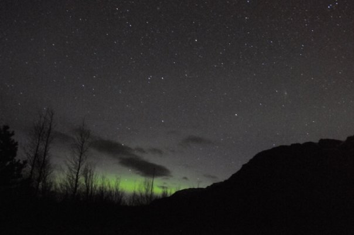
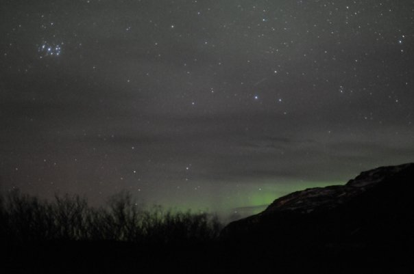
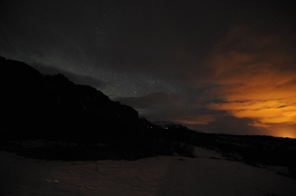

Borgarnes

Finally we reached the site of our goal. Elfa's summer house near
Borgarnes is in a nice dark area, where you can see a sky full of stars
and all the colors of the Northern Lights when it's moderately active.
Elfa's summer house is adorable, but looks really well built.
We knew the Northern Lights were not going to be wildly active,
but I figured we'd probably see SOMETHING.

Something is pretty much what we saw. Something green.
These Northern Lights pictures were taken by Luis, with his SLR camera
set up on a tripod. He timed exposures to be 30 seconds long, so
even though the greenish glow we thought we saw was rather faint, we
were able to confirm that it was the Northern Lights by photography.
Here it is.

Here's the Northern Lights creeping around the other side of the hill
we were near. Unfortunately the big hill we were near was very
hard to get around, and it was directly to the north. We saw
enough of it to sate us though. People were guessing there was a
good chance we would not see the Northern Lights at all, but we did.
What was really cool was when Luis used time-lapse photography to
take pictures every minute or so. When playing it back, we could
see the Northern Lights moving about. This technique also had the
benefit of allowing us to stay warm while the camera did the work out
in the cold.

I do want to see the Northern Lights in all its glory one day.
However, to see them, you have to be around the Arctic Circle at
cold
times of the year, when the Northern Lights are active. It seems
as
though unless you live in areas that far north, you don't have much of
a chance of seeing the Northern Lights. We briefly wondered if
the green glow was perhaps light pollution from a nearby city.
However, a nearby city had a reddish glow, not green. You
can see the contrast in this picture.

Back to my camera. Here was inside Elfa's home. The house
took Elfa's family a lot of effort to build. Elfa loves coming up
here whenever she has a chance to relax in peace.

Here's Elfa opening bottles of Jökull Bjór, the
local beer from Stykkishólmur.

A ladder to the attic.

Plenty of area to sleep if there's a big group. Since there
seemed to be many interested, I asked Elfa, and she estimated her
little house can reasonably hold eleven people.

The kitchen was clean and efficiently designed. No dishwasher :(

Well, this is certainly not a house for a dude, unless that dude has a thing for flowers.

Here's a bedroom in the house with three beds. Iceland only has
approximately 300,000 people, so perhaps this house doesn't get very
large groups.

All the comforts of home out here.

Here's the front door of the house with shoes to trip on.

Elfa had a log book in the house. She writes diary entries
regularly in this book, but she also asks her guests to write
something. You can read my entry here.

Luis's entry will remain private. I'm sure he said some very nice things.

Here's a view, during the day, of the big rock near the house that was in our way at night.

Elfa's car parked at her house. The Mazda had no problem navigating the light snow we encountered.

Elfa's house had a fun walkway build around the perimeter.

We headed back toward Reykjavik, hoping to stop here along the way for
some Icelandic horseback riding. No one was home, unfortunately.

However, we saw this horse wandering freely about. That's what
Icelandic horse owners do. At a certain time each year, Icelandic
horses are allowed to wander wherever they want, and they'd find their
way back when the work season starts up again.

This horse didn't mind us taking his picture.

Another horse snuck up on us. "Hey! Don't be messing with my buddy!" said the eyeless horse.

We learned the horses all had eyes, and we befriended them. Our
friendship had something to do with the slices of bread we had to feed
them.

Even the cool and collected eyeless horse. Look at him and that
little strand of grass. If he was a camel, that would be a
cigarette in his mouth.

Here was the star of the afternoon. I'll name this horse Nermal.
He was the smallest shaggiest, shyest horse of them all. He
was so cute. I wanted to pet him. And yeah, I don't
remember which was what gender, so I'll just use genders randomly.

"Hey! I want to be pet! Gimme bread! Gimme attention! Who's this Nermal anyway?" Yes, this particular horse was following me everywhere, probably in heat. I just wanted to play with Nermal.

Nermal however wanted to play with horses, not humans. He was
small and shy and untrusting of humans. We think this horse was
his mother.

"You saw me first! Don't forget about me! Please pet nose." No, I don't want to pet your nose. I want to pet Nermal! Okay, okay, fine.

Elfa was busy tending to the horses. Or perhaps they were mugging
her and she was too embarrassed to admit it later on. I'll never
know for sure. Like usual, it was cold out here, but it was
during the day and we were having such a fun time so none of us cared.

After enough yapping, mother horse allows Nermal to play with his three playmates instead of us.

Two horses engage in some mixed martial arts action.

The black horse breaks free of the brown horse's hold and the brown horse says "Oh no!" and makes a run for it.

Luis is busy taking pictures while the white horse dares Nermal to bite Luis on the ass.

Nermal takes the dare. The white horse moves to distract Luis and
here's the moment just before Nermal nips Luis on the bum. Luis
yelps all the horses have a good laugh alongside us. Nermal
finally lets me pet him.

We're leaving, and Nermal is now our playmate. Nermal stares longingly at us as we walk away.

"Come back guys! Wanna play."

We speed away alongside this stream, wiping the tears from our frozen eyes.

Sharply sculpted imposing mountains under the dark clouds held our gazes.

Gas prices don't show up too well in photography I guess. I got a scrape on my way to pet the horses.

The nice people at this station gave me a bandage.

We drove on toward the mountains. A ring of black rocks traced along the edges of an icy lake.

The weather sometimes picked up a little, and light dustings would ride
down these mountainsides onto the roads. I'm sure during storms
this could be a problem, but we weren't worried.

Mountains on the far side of the lake.

Often the line where the snow sticks seems very close. On Mount
Fuji, I didn't see snow until around two miles altitude or so. Of
course, it was over 60 degrees warmer in Japan during July, so that's
not a fair comparison.
Back